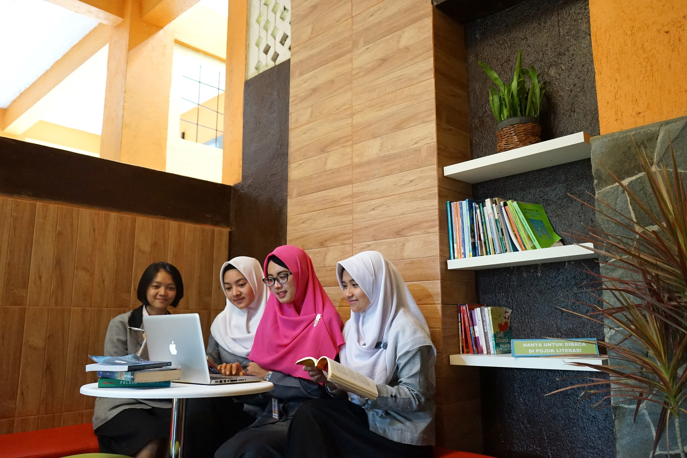
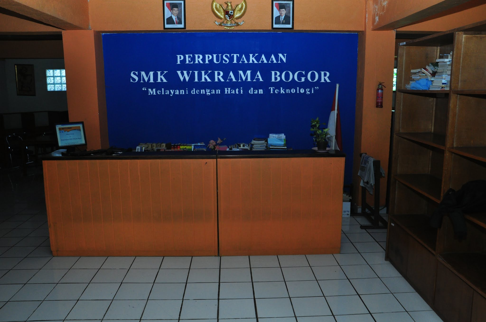
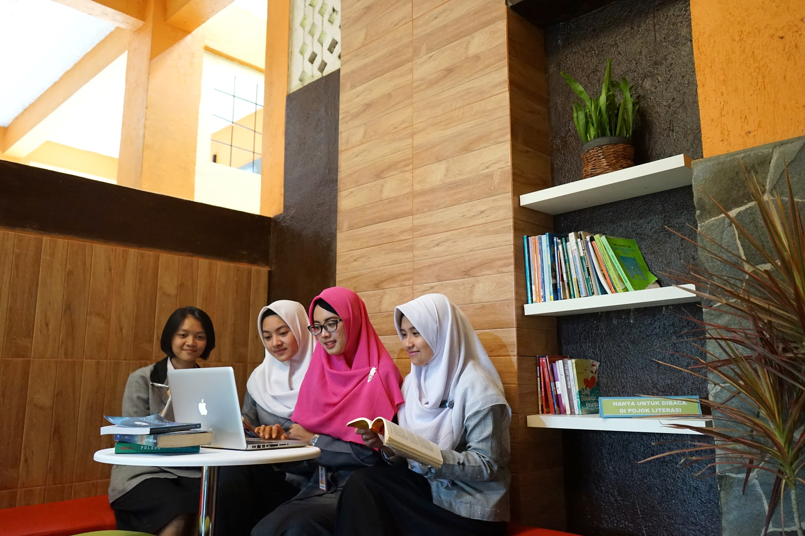
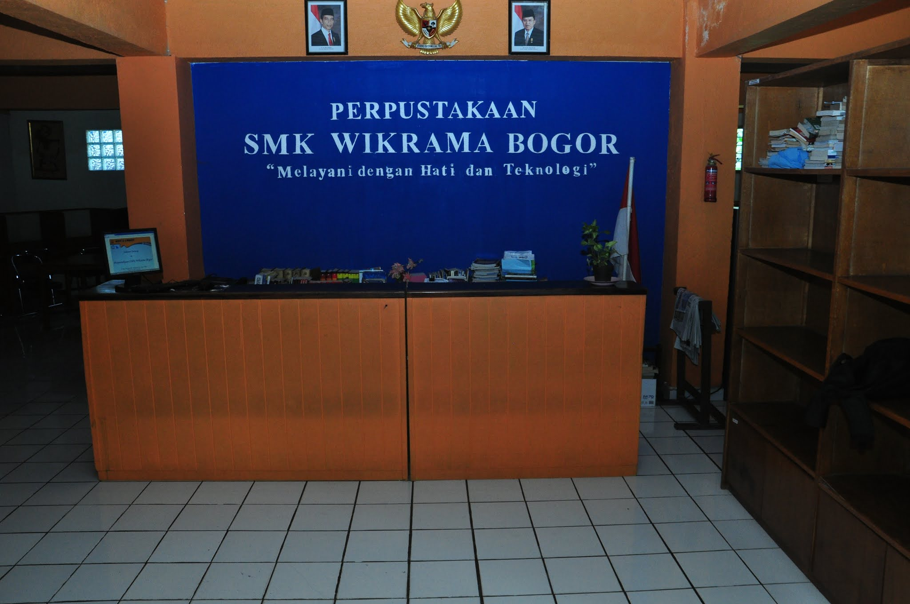

PERPUSTAKAAN WIKRAMA
Perpustakaan Wikrama Bogor
Perpustakaan SMK Wikrama Bogor berada di Kampus SMK Wikrama Bogor Kelurahan Sindangsari, Kecamatan Bogor Timur, Kota Bogor didirikan pada tahun 1996. Secara fisik perpustakaan sekolah terletak di lantai 2 (dua) gedung Pajajaran yang merupakan gedung pertama yang dibangun, tepatnya berada di area bangunan seluas 96 m2. Lokasi ini berada di pusat kegiatan pembelajaran yang mudah dijangkau oleh peserta didik, pendidik dan tenaga kependidikan. Semenjak didirikan, keberadaan ruang perpustakaan SMK Wikrama Bogor memberikan manfaat bagi sivitas akademik sekolah bahkan masyarakat sekitar sekolah.
Visi
"Menjadi perpustakaan sekolah teladan berbasis Teknologi Informasi dan Komunikasi"
Misi
- Menjadikan perpustakaan sebagai sumber informasi bagi sivitas sekolah dan masyarakat
- Menjadikan budaya membaca sebagai bagian dari budaya sekolah
 


